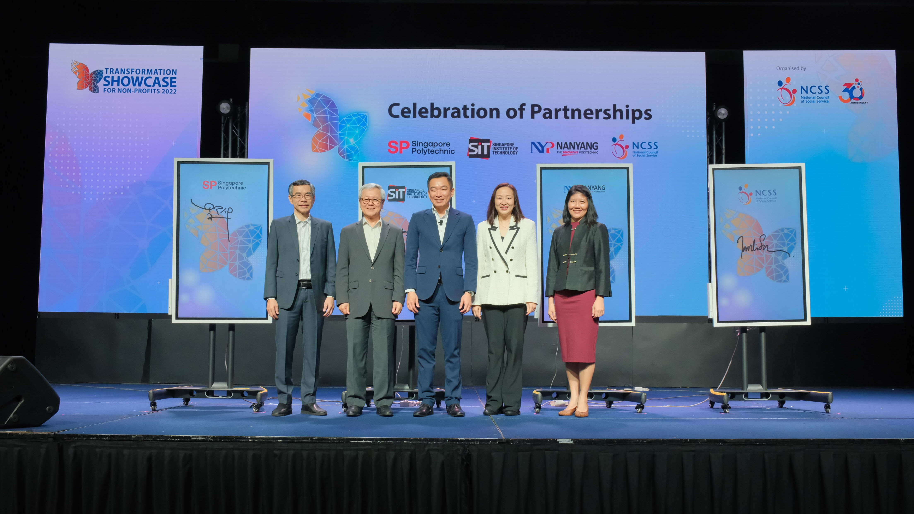

NCSS
November06, 2022
1106 Comments

Singapore Polytechnic has an ongoing collaboration with Grundfos, a global water technology company, to jointly develop energy-saving and water-saving smart solutions to help local industries achieve sustainable development, and be better positioned to maintain their competitiveness globally.
An increasing number of green modules such as environmental management and sustainability design are being introduced to the diploma courses offered by the polytechnics. The move is aimed at helping students gain skills and knowledge that will allow them to work in sustainability-related fields, a new area of growth.
Singapore Polytechnic (SP) has announced a collaboration with Sembcorp Industries and CHINT Electric Co. to accelerate the development of sustainable energy in Asia.